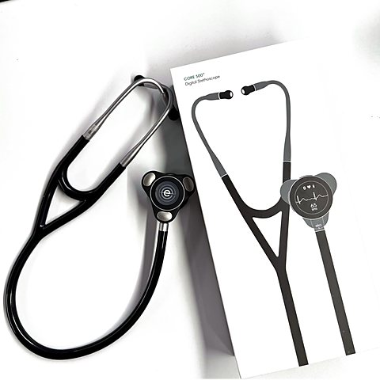

Eko CORE 500 digital stethoscope
A digital stethoscope that amplifies and filters heart and lung sounds, and records a 3-lead ECG through electrodes on the chestpiece.
- What it measures
- Heart, lung, and body sounds; 3-lead ECG; heart rate.
- Where the data go
- Patient
- Chestpiece
- Bluetooth
- Eko app
- Optional cloud / sharing
- AI & data
- Built in: Optional AI flags for possible murmurs and atrial fibrillation (paid Eko+ plan for clinicians). Without it, it works as an amplified stethoscope.
With this data: Recordings could also be used to train or test other heart and lung sound models.
What could go wrong? A recorded exam can be replayed and shared. Before it leaves the bedside, who should be able to open it?